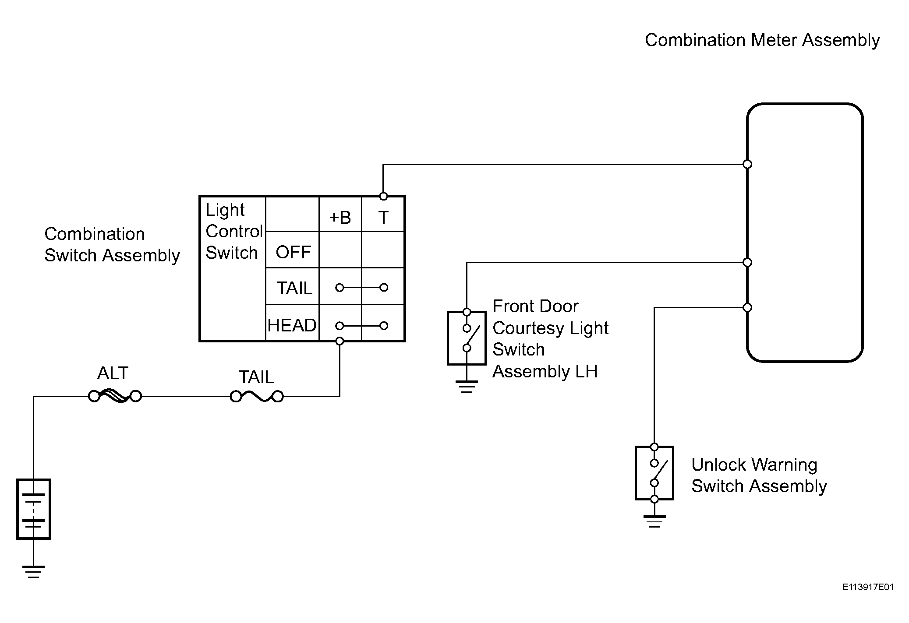

Home
>>
Scion
>>
2006
>>
xB Standard
>>
Repair and Diagnosis (Single Page)
>>
Accessories & Equipment
>>
Gauges & Instrument Panels
>>
Meter
>>
Meter / Gauge System
>>
Warning Buzzer does not Sound
>>
Wiring Diagram
Warning Buzzer does not Sound: Wiring Diagram
Fig 1: Warning Buzzer Does Not Sound - Wiring Diagram

Courtesy of © TOYOTA, LICENSE AGREEMENT TMS1002